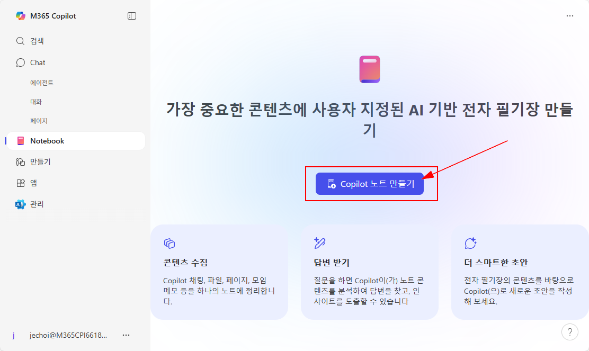
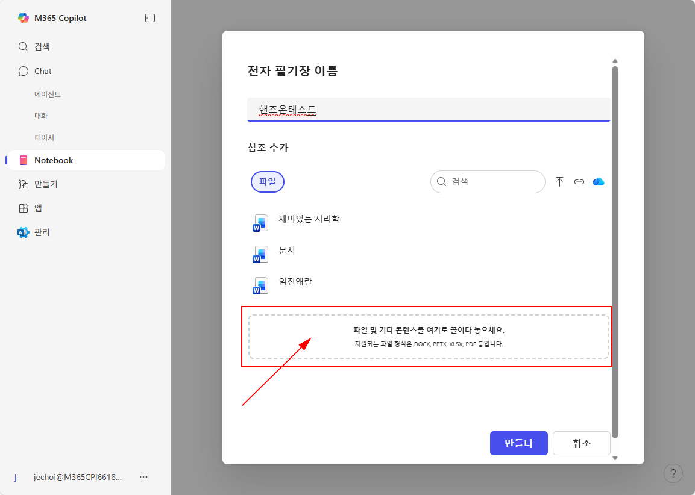

1️⃣ 첫번째 단계, 준비물 파일 준비하기
- 테스트에 활용할 준비물 파일을 코파일럿을 이용해 생성하려고 합니다.
- 워드문서 하나, 엑셀파일 하나를 작성하겠습니다.
- 코파일럿의 웹 탭에서 아래의 프롬프트로 각각의 파일을 만들고 다운로드 하여 저장해 주십시오.
🚩 Word 생성 프롬프트 (프로젝트 계획서)
"프로젝트 계획서" Word 문서를 새로 만들어 주세요. 파일명은 "HandsOn_프로젝트_계획서.docx".
요구사항:
- 언어: 한국어(존댓말), 간결/명확
- 회사명: 태풍상사, 부서: 태풍영업1팀
- 문서 머리글: 문서 제목과 생성일(오늘 날짜)
- 본문 섹션(제목 포함):
1) 개요(3문장): 배경/목표/범위
2) 목표 및 KPI(표): 목표명 | 지표 | 기준선 | 목표값 | 측정주기
3) 범위(Scope): In과 Out을 각각 4~6개 bullet
4) 일정(마일스톤 표): 마일스톤 | 담당 | 마감일 | 상태
5) 리스크 & 완화(표): 리스크 | 심각도(높/중/낮) | 완화계획 | 모니터링지표
6) 의사결정 및 승인(표): 항목 | 책임자 | 승인일(공란) | 비고
- 주의: 민감정보 금지. 숫자/날짜는 현실적 범위로. 샘플 문서임을 표지 상단에 명시.
- 완료 후: 섹션별 목차 자동 생성.
문서 생성이 끝나면 저장/다운로드 링크 또는 열기 버튼을 제공해
요구사항:
- 언어: 한국어(존댓말), 간결/명확
- 회사명: 태풍상사, 부서: 태풍영업1팀
- 문서 머리글: 문서 제목과 생성일(오늘 날짜)
- 본문 섹션(제목 포함):
1) 개요(3문장): 배경/목표/범위
2) 목표 및 KPI(표): 목표명 | 지표 | 기준선 | 목표값 | 측정주기
3) 범위(Scope): In과 Out을 각각 4~6개 bullet
4) 일정(마일스톤 표): 마일스톤 | 담당 | 마감일 | 상태
5) 리스크 & 완화(표): 리스크 | 심각도(높/중/낮) | 완화계획 | 모니터링지표
6) 의사결정 및 승인(표): 항목 | 책임자 | 승인일(공란) | 비고
- 주의: 민감정보 금지. 숫자/날짜는 현실적 범위로. 샘플 문서임을 표지 상단에 명시.
- 완료 후: 섹션별 목차 자동 생성.
문서 생성이 끝나면 저장/다운로드 링크 또는 열기 버튼을 제공해
🚩 Excel 생성 프롬프트 (판매 데이터 + 피벗/차트)
새 Excel 통합문서 "HandsOn_sales_demo.xlsx"를 만들어 주세요.
시트 구성과 요구사항:
1) Raw (원천데이터)
- 열: order_date(YYYY-MM-DD), region, product, channel, units, unit_price, cost, revenue, margin_rate
- 볼륨: 최근 1개월 기준, 5개 지역 × 8개 제품 × 3채널로 300~600행
- 값 규칙:
* revenue = units * unit_price (±0.5% 이내 오차 허용)
* margin_rate = (revenue - units*cost) / revenue (0~0.7 범위)
* region 예시: Seoul, Busan, Incheon, Daegu, Gwangju
* channel 예시: Online, Retail, Partner
- order_date는 주말 포함 고르게 분포
2) Pivot (피벗 테이블)
- 기준: 행=region, 열=product
- 값: 매출 합계(revenue), 평균 마진율(margin_rate)
- 통화/백분율 서식 적용, 큰값→작은값 정렬 가능
3) KPI (요약 표)
- 매출 총합, 평균 마진율, Top 3 지역(매출), Top 5 제품(매출)
- 각 항목은 표로 깔끔히 표시
4) Charts (차트)
- 제품 Top 5 매출 수평 막대 차트 1개
- 제목/축 레이블 한글, 단위(억원) 표기
완료 후:
- 기본 필터/정렬 설정
- KPI 시트 상단에 "샘플 데이터 – 교육용" 주석
- 파일 저장/다운로드 링크 또는 열기 버튼
시트 구성과 요구사항:
1) Raw (원천데이터)
- 열: order_date(YYYY-MM-DD), region, product, channel, units, unit_price, cost, revenue, margin_rate
- 볼륨: 최근 1개월 기준, 5개 지역 × 8개 제품 × 3채널로 300~600행
- 값 규칙:
* revenue = units * unit_price (±0.5% 이내 오차 허용)
* margin_rate = (revenue - units*cost) / revenue (0~0.7 범위)
* region 예시: Seoul, Busan, Incheon, Daegu, Gwangju
* channel 예시: Online, Retail, Partner
- order_date는 주말 포함 고르게 분포
2) Pivot (피벗 테이블)
- 기준: 행=region, 열=product
- 값: 매출 합계(revenue), 평균 마진율(margin_rate)
- 통화/백분율 서식 적용, 큰값→작은값 정렬 가능
3) KPI (요약 표)
- 매출 총합, 평균 마진율, Top 3 지역(매출), Top 5 제품(매출)
- 각 항목은 표로 깔끔히 표시
4) Charts (차트)
- 제품 Top 5 매출 수평 막대 차트 1개
- 제목/축 레이블 한글, 단위(억원) 표기
완료 후:
- 기본 필터/정렬 설정
- KPI 시트 상단에 "샘플 데이터 – 교육용" 주석
- 파일 저장/다운로드 링크 또는 열기 버튼
2️⃣ 두번째 단계, 코파일럿 노트북에 파일 추가하기
-
코파일럿 노트북을 열고, 새 노트북을 생성합니다. 노트북의 이름은 편하게 지어주세요.
 -
첫번째 단계에서 생성한 2개의 파일(워드, 엑셀)을 코파일럿 노트북에 업로드합니다.
 - 업로드한 파일들이 노트북에 잘 추가되었는지 확인합니다.
3️⃣ 세번째 단계, 코파일럿 노트북에서 파일 활용해보기
- 업로드한 파일들을 활용하여 아래의 예시 프롬프트를 코파일럿 노트북에 입력해 봅니다.
🚩 워드 문서 활용 프롬프트
"HandsOn_프로젝트_계획서.docx" 문서를 검토하고, 프로젝트 목표와 KPI가 현실적인지 평가해 주세요. 또한, 리스크 관리 방안에 대한 개선점을 제안해 주세요.
프로젝트 계획서.docx를 함께 참조해서 핵심 목표 3개와 KPI 3개를 표(분류 | 내용 | 출처)로 정리해줘.
담당자별 주요 작업을 마감일 오름차순으로 정리하고, 누락은 **‘미정’**으로 표기해줘.
🚩 엑셀 파일 활용 프롬프트
"HandsOn_sales_demo.xlsx" 파일의 판매 데이터를 분석하여, 지난 한 달간 가장 매출이 높았던 지역과 제품을 각각 3개씩 알려 주세요. 또한, 평균 마진율이 가장 낮은 지역에 대한 개선 방안을 제안해 주세요.
파이썬으로 분석해줘. sales_demo.xlsx를 pandas로 읽고 상위 5행, 컬럼 정보, 결측치 개수를 보여줘.
결측치는 임시로 제거하고, revenue = units * unit_price를 검증해줘. 불일치 행이 있으면 표로 보여줘.
region, product별 매출 합계와 평균 마진율을 피벗 테이블로 만들어줘.
그리고 매출 Top 5 제품과 마진율 하위 5 제품을 리스트로 보여줘.
그리고 매출 Top 5 제품과 마진율 하위 5 제품을 리스트로 보여줘.
product 상위 5개 매출을 수평 막대 차트로 그려서 이미지로 저장하고 미리보기로 보여줘.
4️⃣ 네번째 단계, 지침을 수정하여 적용해 보기
-
코파일럿 노트북의 지침을 수정하여, 보다 구체적이고 명확한 답변을 얻을 수 있도록 합니다.

- 수정된 지침을 바탕으로 다시 한 번 예시 프롬프트를 입력해 보고, 이전과 다른 점이 있는지 확인합니다.
🚩 지침 프롬프트
다음 지침을 모든 후속 결과에 항상 적용해줘:
1) 톤/문체: 존댓말, 간결·명확, 불필요한 수식어 금지.
2) 템플릿(섹션 제목 포함):
① 개요(3줄),
② 핵심요약(3~5 bullet),
③ 액션아이템(담당/기한/상태),
④ 리스크&완화,
⑤ 참고문서(파일명/페이지/문장) 또는 데이터출처(시트/행).
3) 액션아이템은 마감일 오름차순 + 담당자 이니셜 표기.
4) 추정 금지: 참조에 없는 내용은 ‘미확인’으로 표기.
5) 수치/차트 제시 시 단위 명시(예: 억원, %), 표는 마크다운 표로.
1) 톤/문체: 존댓말, 간결·명확, 불필요한 수식어 금지.
2) 템플릿(섹션 제목 포함):
① 개요(3줄),
② 핵심요약(3~5 bullet),
③ 액션아이템(담당/기한/상태),
④ 리스크&완화,
⑤ 참고문서(파일명/페이지/문장) 또는 데이터출처(시트/행).
3) 액션아이템은 마감일 오름차순 + 담당자 이니셜 표기.
4) 추정 금지: 참조에 없는 내용은 ‘미확인’으로 표기.
5) 수치/차트 제시 시 단위 명시(예: 억원, %), 표는 마크다운 표로.
5️⃣ 다섯번째 단계, 새로운 코파일럿 노트북 만들어 활용하기
- 오늘 이 시간에 배운 내용을 바탕으로, 나만의 코파일럿 노트북을 만들어 보세요.
- 나의 업무와 관련된 파일들을 업로드하고, 적절한 지침과 프롬프트를 활용하여 업무에 도움이 되는 결과를 얻어 보세요.